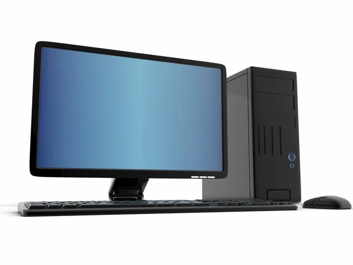
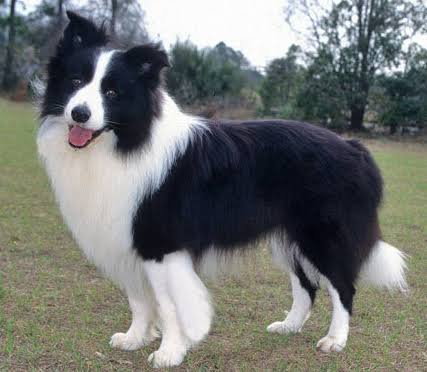

대학에서 컴퓨터공학을 전공하고 졸업을 맞이한 후, 약 6개월 동안의 치열했던 준비와 깊은 고민의 시간을 보냈습니다. 무작정 달리기보다 나아가고자 하는 방향을 정립하기 위한 충전기였습니다.
그 고민 끝에 데이터의 무궁무진한 가능성에 매료되었고, 현재는 SSAFY 대전 5반 데이터 트랙에 입과하여 매일 집요하게 코드를 짜고 데이터를 정제하며 단단히 기초를 다져가고 있습니다.
삶을 채우고 있는 중요한 조각들입니다.
기본적인 컴퓨터 구조, 네트워크, 데이터베이스, 알고리즘을 이수하였습니다. 졸업 이후 6개월의 정비 기간을 통해 단순 스펙 쌓기가 아닌, 진정으로 원하고 몰입할 수 있는 기술 분야가 무엇인지 진지하게 성찰했습니다.

현재 대전 5반에서 활약하며, 방대한 로우 데이터(Raw Data)를 가공하고 유의미한 인사이트를 창출하는 학습에 몰두하고 있습니다. 동료들과 활발한 코드 리뷰를 진행하며 성장 과정을 하루하루 빠짐없이 아카이빙합니다.
복잡하게 얽힌 소스 코드에서 벗어나, 온전히 손끝의 촉감과 소리에만 집중하는 시간입니다. 클래식 명곡을 꾸준히 연습하여 한 곡을 온전히 내 손으로 끝마쳤을 때 느끼는 집중의 성취감은 저의 일상적 뚝심과 닿아있습니다.
세상에서 제일 똑똑하고 끝없는 체력을 자랑하는 동반자 보더콜리와 함께 살고 있습니다. 매일 유성구 구석구석을 힘차게 뛰노는 아침/저녁 산책 일과는, 힘든 코딩 학습 속에서도 지치지 않고 활력을 유지하게 해주는 고마운 비결입니다.
